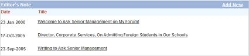
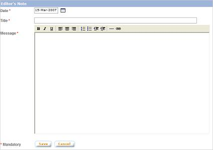
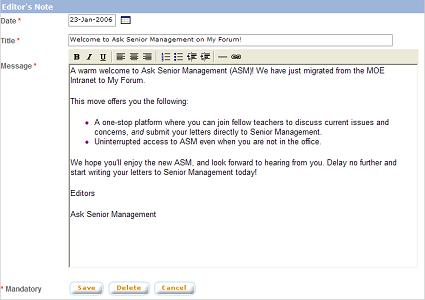

|
Editor's
Note
The Editor's Note module allows the admin to maintain
editor's note which will be displayed on the right side menu of
the ASM module. Editor's Note is a message from ASM administrator
to ASM readers.
a. Click on "Editor's Note" button from the left
panel of the admin main page
b. The "Editor's Note" screen will display
the list of editor's notes which have been created previously.

1. Add New Note
a. Click on "Add New" link at
the top right corner of the "Editor's Note" screen.

b. Select the publish date.
Enter the title and message.
c. Click on "Save" button
to save the note
2. Edit Note
a. On the Editor's Note
list page, click on the name of the note.

b. Make necessary changes.
Click on "Save" button to save the changes.
3. Delete Note
When in Edit mode, click on "Delete"
button to delete the note.
|